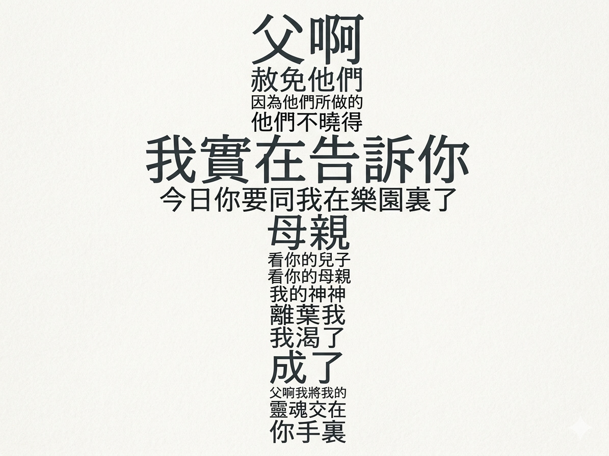

刚才在有一点点黑暗当中，我不知道你是否会觉得不舒服，是否会觉得有压抑感，或者是否会觉得沉重。在受难节的时候也会把我们带回到大约两千年前耶稣钉十字架这样的时候，那是整个人类历史当中最最重要的一切。因为创造天地万物的主宰竟然死，且要死在十字架上。耶稣基督钉十字架，并且耶稣基督在十字架上，他也不停地向世人继续来说话。圣经记载下来有七句话，被称为叫“十架七言”。其中前四句是主耶稣基督对人所说的，而后面的几句是主耶稣基督对天父所说的。如果对人所说的就像是一个横向的关系，如果耶稣基督在地上向天父所说的是一个垂直的关系，那垂直的关系加上纵向的关系，那就是十字架了。
耶稣基督在十字架上，他一共有七句话。主耶稣基督在十字架上，他所说的第一句话是：“父啊，赦免他们；因为他们所做的，他们不晓得。” 这是一句赦罪之言。我们普通人当要离开这个世界，要受到一些冤屈的时候，我们常常都会说为我报仇。然而耶稣基督，那个创造天地的万方的主宰竟然对伤害他、刺他、羞辱他的罗马的兵丁以及那些犹太人说：“父啊，赦免他们；因为他们所做的，他们不晓得。”
耶稣基督曾经为许多人代祷，主耶稣基督曾经为彼得代祷：“当你回头以后，你要来坚固你的弟兄。”果然，当耶稣基督要来钉十架之后，彼得三次否认主。主耶稣基督也曾经为教会来代祷，为今天我们所有的教会来代祷，为着教会的合一而代祷。现在主耶稣基督为了那些伤害他甚至仇人的一群人来祷告：“父啊，赦免他们；因为他们所做的，他们不知道。”这正应验了，在旧约以赛亚先知之书所说的：“他也列在罪犯之中，他却担当多人罪，又为罪犯代求。”
那些伤害他的，那些是耶稣基督的仇敌，耶稣基督竟然恳求天父赦免他们。今天我们在这里问一个问题，我们看起来好像是自由的，没有人把我抓在监狱里。但若没有认识那位至高的上帝的时候，我们都是罪的仆人，我们都犯了罪。在那位至高的上帝面前，我们都是罪人，都是和那位至高圣洁的神是仇敌。然而耶稣基督一直为我们代祷：“父啊，赦免他们；因为我们所做的，我们不知道。”每一个罪，所有的罪都要被审判。当我们今天来到这里，我们会如何去解释？当我们来到耶稣基督面前，能够来到那位愿意为我们舍命的主耶稣的面前，耶稣基督说：“父啊，赦免他们。”但是你都来到这里了没有？你愿意敞开你的心，接受耶稣基督的赦罪吗？当我们今天离开这里的时候，你会领受耶稣基督放在你心里的赦罪的平安和喜乐吗？你在上帝的眼里不再是一个罪人。你是被主耶稣基督所赦免的人。这是第一句赦罪之言。
耶稣基督所说的第二句话是保证之言。耶稣基督对其中的一个强盗说：“我实在告诉你：今日你要同我在乐园里。” 因为有一位与耶稣基督同钉十字架的强盗对耶稣基督说：“主耶稣啊，求你得国降临的时候纪念我。”与耶稣基督同钉十字架的强盗，还有另外一位，一位愿意来接受耶稣基督。另外一位在那边来讥笑主耶稣基督说：“他连他自己都救不了，他如何能够救我？”
其实还有一颗真正的漏网之鱼，圣经里告诉我们说，他的名字叫巴拉巴。在耶稣基督要钉上十架之前，公会的人和罗马人，他们说，如果有人可以被释放的话，可以来代替耶稣不需要上十架。那些人在那边喊叫说：“释放巴拉巴，要把耶稣钉十架。”而耶稣钉上十架，被释放的那个强盗巴拉巴是罪大恶极的，他逃脱了钉十架命令，他是漏网之鱼。在教会历史上，提到巴拉巴，他当看到耶稣钉十架之后，他在那里说：“那个人，那位被称为耶稣的上帝的独生儿子，他钉十架，原来是真正地为我钉上十架。”旁边的强盗也在那里说，原来耶稣这个钉十架是为他的。
今天坐在这里的每一位，我们都是像巴拉巴一样的，因着耶稣基督的缘故，我们不再被钉十架。本该钉上十架的是我们这些罪人都应该受十架刑罚。然而耶稣基督说，今日我告诉你耶稣基督的保证之言，所有今天在这里愿意来接受耶稣基督的，都已同在乐园里。这是耶稣基督的保证。
主耶稣基督也继续在十架，来说第三句话，是孝亲之言。耶稣基督对着他肉身的母亲马利亚和他所爱的那个门徒约翰说，对他的母亲说：“母亲，看你的儿子！” 又对那门徒说：“看你的母亲！” 从此那个门徒约翰就把主耶稣的母亲马利亚接到自己的家里去。
但是，因着耶稣基督钉十架，竟然成为一个新的一种家庭的关系。看啊你的母亲，看啊你的儿子。耶稣基督在钉十架之后，他仍然顾及他自己作为人，作为儿子的本分，他要尽诸般的义，所有的人离他而去，但主耶稣基督仍然纪念他的母亲，仍然挂念他所爱的门徒。今天在这里的每一位，我们因着耶稣基督缘故，我们同在一个教会，都在城南堂，都在国语部。我们是一个新的家庭，所有的我们成为一个家庭的关系，都因着耶稣基督的缘故。正如耶稣基督对他所爱的母亲说的那样，“看啊你的母亲，看啊你的儿子”，在耶稣基督里，在这里新造的人，成为一个新的基督里的家庭的关系。而这样一个被称为兄弟姐妹的关系，会超越今天这短暂了几十年的时间，要一直持续到耶稣基督再来接我们，一直在永恒当中。这是耶稣基督向我们所有人保证。
耶稣基督继续在十字架上大声喊叫：“以利，以利！拉马撒巴各大尼？” 这是犹太话，翻出来意思就是：“我的神，我的神！为什么离弃我？” 耶稣基督对他的天父在那里大声喊叫：“我的神，我的神，为什么离弃我？”在十架上，耶稣就在那里大声喊叫。耶稣受钉十架从上午大约九点一直到下午，一直到午正，一直到申初，大约三个小时，是全天最明亮的时候。然而圣经却告诉我们说，在午正，应该是太阳最光明的时候，最亮时候，遍地都黑暗。
耶稣基督钉十架的时候，那是整个人类历史上最黑暗的时刻，因为所有的罪都担当在耶稣基督身上. 耶稣基督不只担当耶稣基督那个时代的罪，也担当今天我们所有的罪. 耶稣基督在那里大声喊叫：“我的神，我的神，为什么离弃我？”还不是说这个罪有多少数量的人物，而是因为耶稣基督没有犯罪，本不该死，本不该受审判，但是耶稣基督受到了如同罪犯一样的审判，就是为你。圣经告诉我们说，我们以为他受责罚，以为他被神击打苦待了，然而耶和华却定意将他压伤，使他受痛苦。圣经也告诉我们说，凡钉在十架上的，凡钉在木头上的，都是被受咒诅。耶稣基督钉在十架上，是替我们受咒诅，是替你受了咒诅，是替我受了咒诅。咒诅他受，祝福我得。
在耶稣基督钉十架大约三个多小时的时间，整个宇宙仿佛好像都停住了，时间好像也冻结了，所有一切的罪都在十架上显明了，所有神对罪的审判，对罪的愤怒，都在耶稣基督大声喊叫中。我的神，为什么？从创世之初，还没有创造世界，到永恒之中，圣父、圣子、圣灵三一真神，从来没有分开，唯有在人类历史当中，距我们今天大约两千年前，那位天父，竟然掩面不看他的独生爱子耶稣基督。却是为着你的罪，为着你的罪，耶稣基督竟然钉着耶稣基督，天父的关系暂时破裂，却把我们这些不配的人、卑微的人，带入到至高的三一真神的这样的美好的环境当中，在永恒当中，我们可以享受三一真神的美好。
主耶稣又在十架上还在那里大声地喊叫说：“我渴了。” 主耶稣基督钉十架的时候，周围有人两次要给耶稣基督东西喝，要拿调了苦胆的没药，调和的酒和醋给耶稣基督喝，为的是要来减轻他的痛苦，就像是让他喝一些麻醉剂一样. 耶稣基督尝了却不肯，因为主耶稣基督他要在钉十架的时候，耶稣基督在那里大声喊“我渴了”。为什么这里会说“我渴了”，因为客西马尼，耶稣基督来给我们答案。因为在那里，耶稣基督三次向天父祷告：“父啊，你若愿意就把这杯撤去，然而不要成就我的意思，只要成就你的意思。”
耶稣基督在十架上，他要主动甘心乐意，他知道他为什么上十架，他主动选择顺服天父之命，因为耶稣基督说：“我父所给我的那杯，我岂可不喝呢？”耶稣基督说“我渴了”，他要喝尽十架上最后一杯苦杯的最后一滴。在圣经也提到，耶稣基督说，当耶稣基督被钉十架的时候，“我如水被倒出来，我的骨头都脱了节，心如蜡熔化，我的精力枯干如同瓦片，我的舌头贴在我牙床上。”耶稣基督说“我渴了”，意思是他甘心乐意，愿意顺服，顺服天父，哪怕顺服至死。
耶稣基督在十架上还大声呼唤说：“成了！” 这是在钉十架，在面对生命即将要失去的时候，世人认为耶稣一事无成的时候，竟然他说“成了”。在圣经中，一共有三次最伟大的“成了”的宣告. 第一次是那位创造天地万物的主宰，创造完天地所有一切，神看的是好的，创造成功。而在耶稣基督再来的时候，要来审判一切的时候，从宝座中发出声音说“成了”。在人类历史当中，还有一次最伟大的宣告，就是耶稣基督在十架上之后，他大声站着呼喊“成了”。
什么成了？是耶稣基督的救恩成就了。所有的人都认为主耶稣基督失败，他连他的命都保不住，然而耶稣基督在那里大声喊叫，神的救恩已经成就了。纵然像当时的门徒还不理解耶稣为什么要钉十架，因此信心软弱，四散而逃。但是当复活的耶稣再次来面向这些曾经惧怕的门徒，神的大能在这些经历耶稣基督拯救的门徒身上，神的奇妙救恩已经彰显出来。今天坐在这里的每一位，已经听到了耶稣基督的救恩，已经成就在十架上，耶稣基督的救恩已经成了，只要你愿意来接受。
最后的一句话，耶稣基督大声喊着说：“父啊，我将我的灵魂交在你手里！” 说了这话，气就断了。最后的一句话不是哀求，反而是另外一个夸耀，在神的面前，在那里向父神夸耀，一无所惧地来夸耀父神，是主耶稣基督灵魂的信实的保护者. 这是一个宣告胜利，我将我的灵魂交在你的手里. 因为主耶稣基督深信，正如约翰福音中所提到，耶稣基督大声说：“没有人夺我的命去，是我自己舍的。我有权力舍命，也有权力取回来。”
耶稣基督在那里大声宣告，在天父的手中。听到这话的人，在下面有一个意大利人，罗马的百夫长，是一个外邦人，他听到这样的话，在那里大声说：“这真是神之子了。”连一个外邦人都因着主耶稣所说的话，愿意来承认钉在十字架上的那一位就是天父的独生儿子，就是那位创造使得我们的生命气息、生命在他里面，他也救赎我们生命的主。主耶稣基督把他的灵魂交在天父手中，我们今天也有信心也有把握，把我们的生命气息交在那位天父的手中，交在那位我们的救赎主，主耶稣基督的手中。
今天我们每个人在世上，我们都会面对一些困难. 耶稣基督的七句话如果连在一起，正好是一个神道。今天是受难节，许多的教会会来纪念耶稣基督受死，常常会穿深着的衣服，会有像黑色的领带，但是受难节不是基督徒信仰的重点，受难节是一个重要的一步，因为耶稣基督钉在十字架上是为我们的罪死了. 耶稣基督也在坟墓里埋葬。
今年四月五号是我们众人的清明节，清明节充满了死亡的气息，但是四月五号也是我们复活节。基督徒的信仰不会只停留在耶稣基督钉十字架上死了，而是充满了盼望，因为七日的第一日，耶稣基督钉十字架第三天，主耶稣基督大声宣告从死里复活，所有跟随他、信靠他的人都会得胜。
神所赐给我们的主耶稣基督，当看我们今天来到你面前的时候，我们来纪念那位创造天地万物的主宰，来纪念在旧约当中应许我们要来打败撒旦的头，要把我们从罪中所拯救出来，那位受苦的仆人，要死在十字架上，并且为着我们的罪要受刑罚、受审判. 本不该受审判的、没有罪的却成为罪，受到了审判. 我们这些本该死、本该钉十字架的，却因着耶稣的救赎担当了我们的罪，罪责获赦。
我们今天在这里来纪念耶稣基督为我们所做的一切奇妙的大功，也让我们常常来思念十字架，也预备了我们好的心，预备我们的心，愿意在卑微的日子下，愿意跟随我们主耶稣基督. 愿这里的每一位弟兄姊妹，愿今天凡听到主耶稣基督拯救罪人大好信息的每一位，敞开我的心，愿我们自己知罪，愿接受耶稣基督在十架上为我们成就了奇妙的救赎的大功，让我们带着耶稣基督奇妙的救赎的大恩，来享受那位至高三一神在我们生命里预备的一切的奇妙的祝福。也常常预备我们的心，让我们愿意来回应主爱，让我们认识主耶稣的爱更多，回应主爱更多；让我们认识耶稣的恩典更多，回应主耶稣基督的恩典更多，以让我们的委身能够更加成就。阿門.